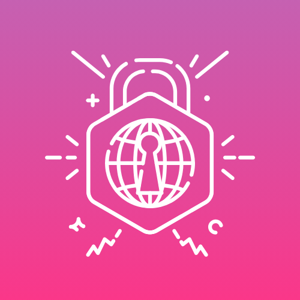
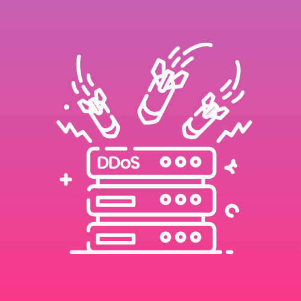
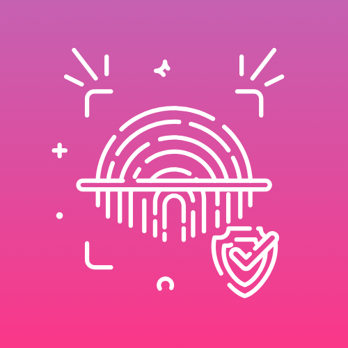
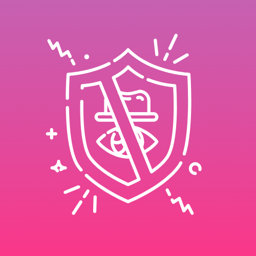

At Open District Solutions, we guide organizations through every stage of their cybersecurity journey — from leadership buy-in to resilience-first strategy.
At Open District Solutions, we see cybersecurity as an ongoing organizational investment requiring leadership, strategic vision, and continuous improvement. Cybersecurity is more than just tools and funding — it's about understanding risk and integrating it into every aspect of your planning and strategy.
From strategic planning to hands-on incident response — we provide end-to-end cybersecurity support tailored to your organization's unique needs.




Founded by Netta Squires in 2015, Open District Solutions brings deep expertise in the state, local, tribal, and territorial sectors — working closely with local governments, state agencies, and national-level organizations.
At ODS, resilience is not an endpoint — it's a continuous cycle. We take a holistic approach across mitigation, preparedness, response, and recovery. Our guiding principle: relationships and collaboration are at the heart of everything we do.
A multidisciplinary team combining cybersecurity, public policy, emergency management, and communications expertise.
Get in touch today and receive a complimentary consultation.